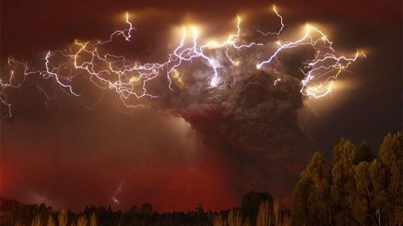
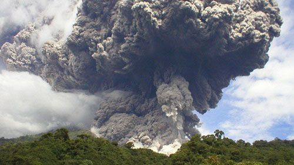
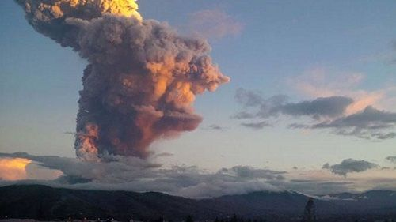
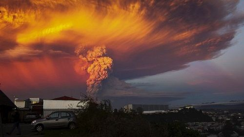

На нашем сайте подобраны наиболее интересные и опасные вулканы со всего мира.
Вулканы разделены по континентам и странам. Подобрать вулкан для рабочего стола можно в разделе
Фотографии. В разделе Новости самые последние
события из мира вулканов.
Сибирским ученым удалось разгадать феномен супервулканизма

Сибирские ученые обнаружили аномалии вулканов, которые отвечают за суперизвержения, сообщает Российская
газета – Сибирь.
Ведущим сейсмологам и геологам удалось найти точки соприкосновения, позволившие построить в целом картину
феномена супервулканизма.
Ученые отметили, что на протяжении последнего миллиона лет самыми активнейшими были три супервулкана – это
Йеллоустон, извергавшийся 640 тысяч лет назад, Таупо, извергавшийся 26 тысяч лет назад, Тоба,
извергавшийся 74, 500 и 840 тысяч лет назад.
Под зонами субдикции, где происходит взаимное погружение участков земной коры, расположены вулканы Таупо и Тоба.
Вулкан Йеллоустон расположился над континентальной корой, у которой верхний слой имеет гранитный состав,
плотность которого ниже мантийных базальтов. Поэтому магме из мантийного плюма тяжело преодолеть эту преграду.
Она накапливается в огромном очаге с легкими фракциями и флюидами, и, достигнув критической массы, попадают
в верхнюю кору. В верхней коре образуется огромный очаг, где находится вязкая магма с кислым составом и
насыщенная горячей водой под огромным давлением.
Колоссальный взрыв происходит из-за дегазации воды, вызывающей лавинообразный процесс. Аналогичные процессы
происходят у вулкана Тоба.
Ученые при помощи сейсмической томографии создали трехмерную картину, где отражалась многоуровневая
магматическая система вулкана Тоба. Модель продемонстрировала, что на глубине 30-50 км происходила контрастная
сейсмическая аномалия – под корой находился огромный магматический очаг объемом 50 тысяч куб. км. Другая
аномалия выявлена внутри коры, которая показывала положение промежуточного окна.
По отметкам ученых, эти две аномалии – главный резервуар ответственный за супервулканизм. Так что, несмотря
на изначальную природную разность вулканов Йеллоустон и Тоба, общего у них много. Одним словом, у «печки»,
которая запускает суперизвержения у супервулканов идентичный механизм работы.
От глобального потепления нашу планету оберегают вулканы

Как отмечают ученые, такие события, как недавнее извержение вулкана Павлова на Аляске, который выбросил пепел
на высоту 6 км, могут привести к глобальному охлаждению, т.е. во всем мире произойдет снижение температуры,
сообщают Gismeteo.Новости.
По сведениям ученых, вулканы начали охлаждать Землю с 2000 года примерно на 0,005-0,12 °C. Согласно их
объяснениям, при крупных взрывных вулканических извержениях происходит попадание большого количества твердых
частиц в стратосферу. Распространяясь там и оставаясь на протяжении нескольких лет, они отражают солнечный
свет и таким образом охлаждают Землю
Кроме того, незначительные извержения, несмотря на их умеренный размер, тоже влияют на климат и составляют
приблизительно одну треть в замедлении глобального потепления.Так что, вулкан Павлова, скорее всего не сможет
повлиять на изменение климата в виду того, что его извержения кратковременны. К тому же его географическое
положение этому мешает
На Курилах выбросил пепел вулкан Чикурачки

На Курильском острове Парамушир начал извергаться вулкан Чикурачки, выбросив пепел на высоту 3 км, сообщает
ТАСС со ссылкой на пресс-службу регионального главка МЧС.
Эти данные были получены с помощью сейсмометров, записывающих на протяжении двух лет волны удаленных
землетрясений, которые проходили через земную кору под вулканом.
В 60 км от вулкана находится город Северо-Курильск, угрозы для жителей города пока нет. На территории района
не зарегистрировано пепловых выпадов и не ощущается запах сероводорода. Вулкану присвоен оранжевый код
опасности для авиации. Существует потенциальная опасность для авиалиний над Камчаткой и Северными Курилами.
В случае выброса пепла на высоту до 10 км опасность для самолетов неминуема.
Расположен вулкан в юго-западной части острова Парамушир и является его высочайшей точкой. Высота вулкана 1816 м.
Этот стратовулкан стоит на древнем лавовом основании. Последний раз вулкан извергался в апреле 2015 года.
Реально ли предсказать вулканическое извержение?

Согласно выводам ученых их Оксфордского университета, вполне возможно предсказать извержения вулканов, которые
окажутся не только более точными, но и заблаговременными, что является главным, сообщают Meteovesti.ru.
Необходимо будет лишь наличие данных о давлении около вулкана и состава газов в вулканическом жерле.
На основе построенной учеными модели, видно, что почти до самого конца концентрация воды в магме остается
низкой и повышается до опасного уровня уже при низких температурах незадолго до извержения.
Считается, что механизм подготовки к эксплозивному извержению заключается в том, что магма с растворенными в
ней газами остывает постепенно и становится каменной, и в уменьшающемся объеме магмы продолжающей оставаться
жидкой концентрируются газы. Пузыри этих газов образуются в момент насыщения, в магматической камере растет
давление, и в свое время магма с газами вырывается на поверхность, т.е. происходит извержение. Поэтому встает
вопрос предсказания именно начального момента образования пузырей, а затем и принятия мер к меньшему ущербу.
Как считалось ранее, процесс подготовки к извержению длится десятилетиями или столетиями, но по предположению
ученых на подготовку уходит гораздо меньше времени. Образование пузырьков газа в вулканическом жерле и
собственно самого извержения происходят всего за несколько дней, либо месяцев. Так что, непосредственно
«вздувание» почвы, которое происходит в результате повышенного давления внутри вулкана и истечение
газов – это якобы признаки приближающейся катастрофы. Может этот способ предсказания и не самый простой,
но его полезность существует. Так, изучение вулкана после извержения может показать процесс, ведущий к
извержению, и, отсюда есть возможность для выделения важнейших признаков для каждого конкретного вулкана.
В итоге, практически нет возможности предсказать извержение. Пробуждение вулкана, спящего на протяжении
нескольких десятилетий, может произойти в любое время. К примеру, вулкан Кальбуко, проснувшийся в 2015 году
в Чили, спал почти сорок лет. Еще хочется отметить, что очень мало проходит времени между началом извержения
и оповещением населения. В большинстве случаев извещение появляется лишь постфактум.